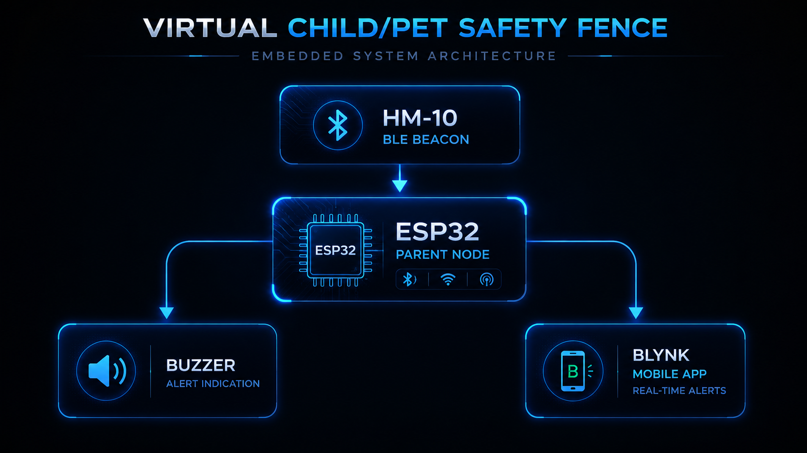
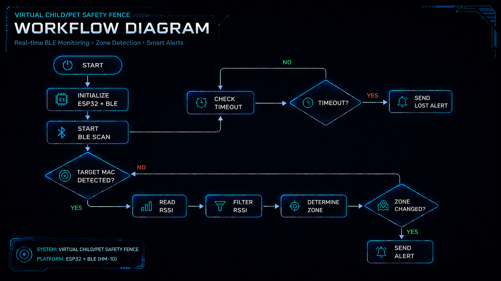

IoT MONITORING
A BLE-based real-time monitoring system designed to virtually track children and pets using RSSI signal analysis and intelligent distance classification.
OVERVIEW
The Virtual Child/Pet Safety Fence is a wearable IoT-based monitoring system that helps users track the proximity of children or pets in real time. The system uses BLE communication between ESP32 devices and evaluates signal strength using RSSI analysis to classify distance levels and trigger alerts accordingly.
PROBLEM
Traditional child and pet monitoring methods often require continuous visual supervision. This project aims to create a lightweight, low-cost virtual safety boundary capable of providing intelligent proximity awareness and alerting users when the monitored subject moves beyond safe distance thresholds.
ARCHITECTURE
The system architecture consists of BLE-based communication between wearable beacon nodes and the ESP32 parent node, which continuously processes RSSI values and triggers real-time alert mechanisms.

WORKFLOW
The workflow continuously monitors BLE signal strength, filters RSSI fluctuations, classifies proximity zones, and intelligently triggers alerts based on state transitions and timeout conditions.

CHALLENGES
RESULTS
FUTURE
Planned future enhancements include WiFi-based notifications, cloud integration, mobile application support, GPS-assisted tracking, and intelligent anomaly detection using machine learning models.